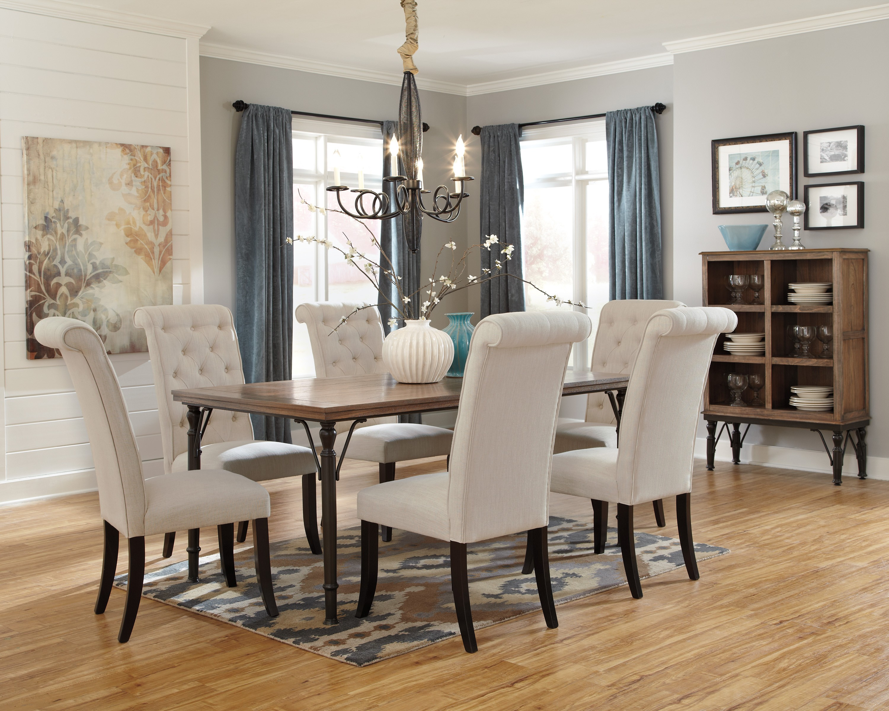
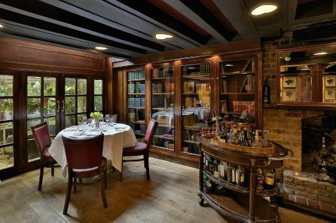
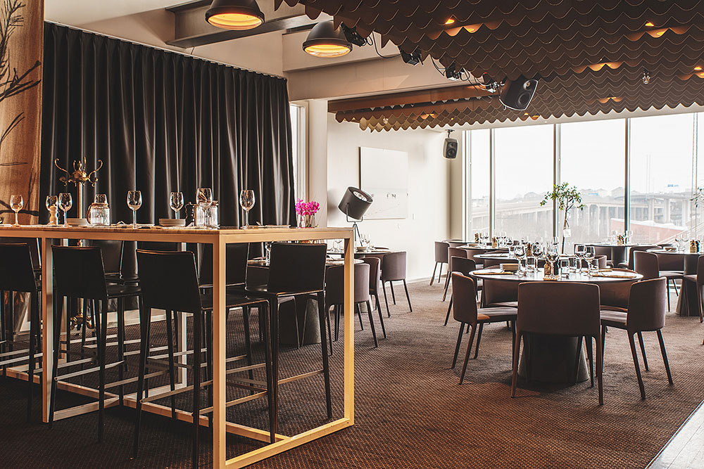
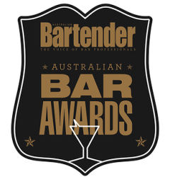

DISCOVER SUR-LIE
GALLERY
FUNCTIONS, EVENTS
& PARTIES
Public is a diverse venue with a variety of spaces on offer for functions, events and parties. We have two private dining rooms; The Library and The Dining Room, both can be used for private dining, while The Dining Room also offers boardroom capabilities.
The main restaurant and bar is also available for select full or partial venue hire. Please email info@restaurant.public.com for further information and availability.
|  |
The Dining RoomA versatile space that can be used for both private dining and out of office board room meetings, this rooms seats 20 and also has the benefits of full connectivity for projected or amplified display. MAXIMUM GUESTS
|
||||
|  |
The LibraryThe library is ideal for a more casual meeting or relaxed dinner seating up to 12. Couches and armchairs are yours to recline in here, with full waiting service for drinks, snacks or a full meal. MAXIMUM GUESTS
|
||||
|  |
Exclusive UpstairsBy combining the two upstairs spaces we are able to provide a versatile experience that can incorporate a private drinks reception, then move seamlessly into a sit down dinner, all in your own private space. Alternatively we can host stand up cocktail drinks receptions over the two spaces. MAXIMUM GUESTS
|
AWARD WINNING
|
2016 Winner of "Best For Parties & Groups", "Best For Special Occasion" and "Top 100" |
|
|
Winner of ”Best New Restaurant” and awarded “One Chefs Hat” Queensland Good Food Guide Awards 2012 / 2013 / 2014 / 2015 / 2016 |
|
|  |
Winner of ‘Best Bar Food’ – Australian Bar Awards 2013/2014 |
|
Winner of 'Certificate of Excellence' 2014/2016 |
Perched above the hustle of Brisbane’s CBD, on the first floor of 400 George Street, Public has burst onto the Brisbane dining scene with gusto since opening its doors in 2012. Public offers an innovative and engaging dining experience with a clever, contemporary menu of share plates that are flawlessly executed. Combining New Yorks sophistication with Brisbane’s warmth, this venue has a number of different spaces including our main dining room, two private dining rooms and a welcoming bar. Whether you drop by for a long lunch with colleagues, a romantic dinner for two, or simply treat yourself to cocktails in the bar; we’ve got you covered.
Combining New Yorks sophistication with Brisbane’s warmth, this venue has a number of different spaces including our main dining room, two private dining rooms and a welcoming bar.
Whether you drop by for a long lunch with colleagues, a romantic dinner for two, or simply treat yourself to cocktails in the bar; we’ve got you covered.
Perched above the hustle of Brisbane’s CBD, on the first floor of 400 George Street, Public has burst onto the Brisbane dining scene with gusto since opening its doors in 2012. Public offers an innovative and engaging dining experience with a clever, contemporary menu of share plates that are flawlessly executed. Combining New Yorks sophistication with Brisbane’s warmth, this venue has a number of different spaces including our main dining room, two private dining rooms and a welcoming bar. Whether you drop by for a long lunch with colleagues, a romantic dinner for two, or simply treat yourself to cocktails in the bar; we’ve got you covered.
Combining New Yorks sophistication with Brisbane’s warmth, this venue has a number of different spaces including our main dining room, two private dining rooms and a welcoming bar.
Whether you drop by for a long lunch with colleagues, a romantic dinner for two, or simply treat yourself to cocktails in the bar; we’ve got you covered.
Perched above the hustle of Brisbane’s CBD, on the first floor of 400 George Street, Public has burst onto the Brisbane dining scene with gusto since opening its doors in 2012. Public offers an innovative and engaging dining experience with a clever, contemporary menu of share plates that are flawlessly executed. Combining New Yorks sophistication with Brisbane’s warmth, this venue has a number of different spaces including our main dining room, two private dining rooms and a welcoming bar. Whether you drop by for a long lunch with colleagues, a romantic dinner for two, or simply treat yourself to cocktails in the bar; we’ve got you covered.
WHAT'S ON
Submissions for this form are currently disabled - please try again later.
GIFT VOUCHERS
A Public Gift Voucher is the ideal gift to celebrate a special occasion such as a Birthday, Anniversary or Wedding and also makes that perfect thank you gift.
Gift vouchers can be purchased for Lunch or Dinner and are available for your chosen amount.
Gift Vouchers are valid for 1 year from the date of purchase and must be used within this time frame.
If you would like to purchase a gift voucher. Please complete the voucher form and return via email.
FIND US
We are located on the corner of George and Turbot street, in Brisbanes CBD. Up the escalator on the first floor of 400 George, opposite the new Brisbane Magistrate High court.
P: 07 3210 2288
A: Upper Level 1, 400 George St, Brisbane. 4000
Opening hours
Monday-Friday
Bar 11.30am-Late
Kitchen 11.30am-Late
Saturday
Kitchen 5pm-11pm
Bar 5pm-midnight
Sunday
Closed
*Public holidays closed unless stated otherwise*